Porygon / Dr. Vektor
Ayuda a Dr. Vektor con el problema del Mundo Digital, desactiva las barreras y derrota al Porygon gigante.
Recompensas de la quest
Al completar la misión y regresar con Dr. Vektor recibirás:
Zona Wildscape 150+
1. Habla con Dr. Vektor
Ve al edificio principal de New Bark Town, el mismo edificio donde se encuentra Nurse Joy. Sube por las escaleras hasta la habitación de Dr. Vektor.
Para iniciar la misión, habla con él escribiendo en este orden: “hi” → “ayudarme” → “yes”.
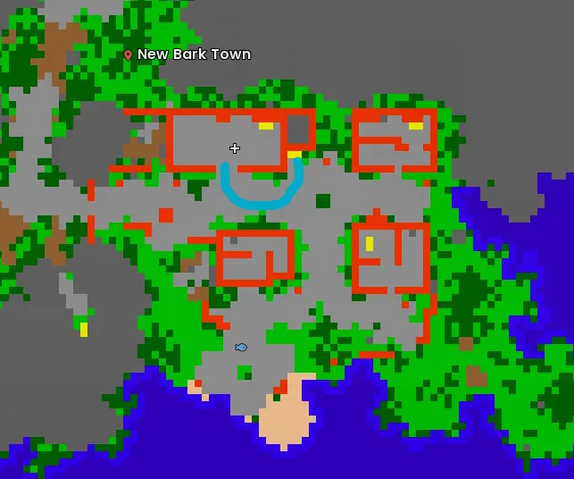
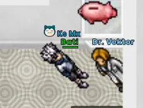
2. Entra por la PC
Después de aceptar la misión, Dr. Vektor libera el acceso. En la misma habitación encontrarás su computadora. Haz clic derecho sobre la PC para entrar al Mundo Digital.
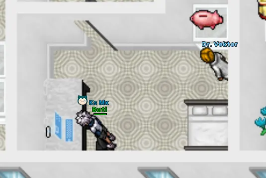
3. Zona de Porygon corruptos
Al entrar, avanza hacia abajo. Encontrarás Porygon corruptos y distintas barreras que bloquean el recorrido.
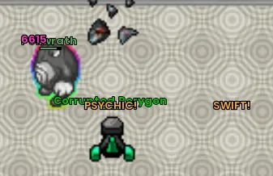
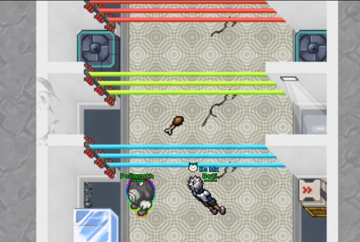
4. Encuentra las PCs y elimina las barreras
Recorre la sala buscando las computadoras. El siguiente mapa marca con puntos negros las posibles ubicaciones en las que pueden aparecer.
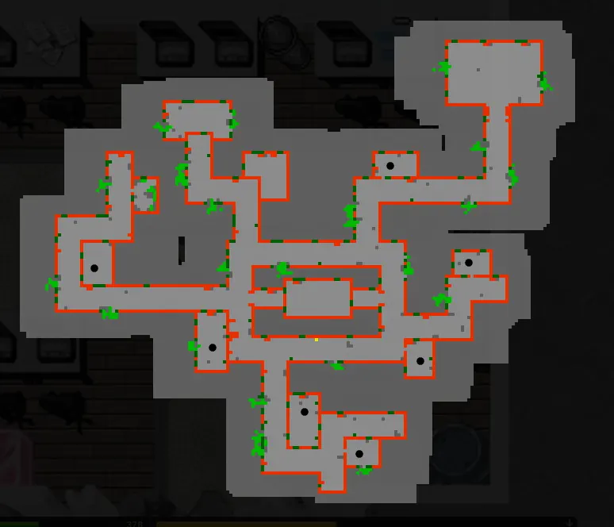
Cómo reconocerlas
Usa estas capturas como referencia visual para identificar las PCs de colores cuando aparezcan en tu intento.
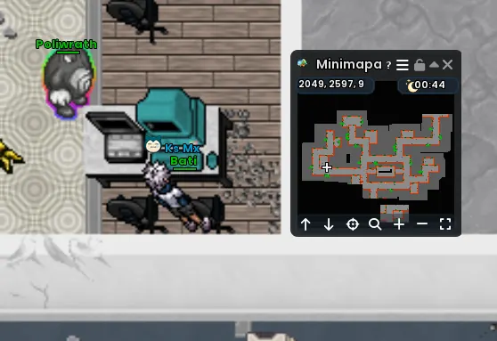
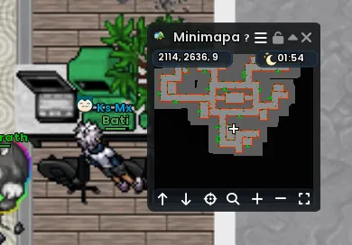
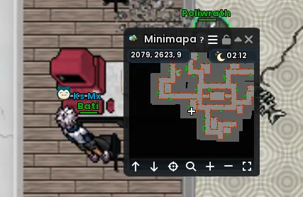
Cuando completes correctamente el mecanismo, aparecerá el mensaje de felicitación y podrás continuar hacia la zona del enfrentamiento.
5. Activa la tableta y enfrenta al boss
En la siguiente sala encontrarás una tableta/terminal en el centro. Interactúa con ella para continuar hacia el enfrentamiento contra el Porygon gigante.
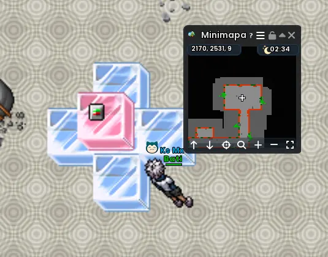
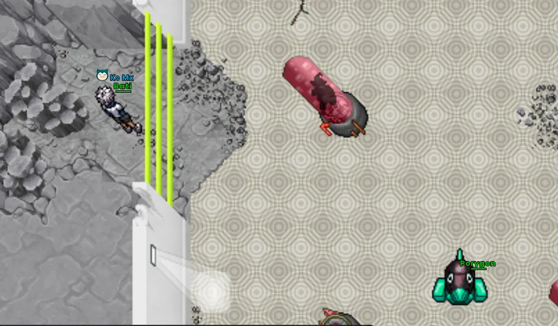
Combate en Poké View
- El boss puede invocar otros Porygon durante el combate.
- Aparecen partículas verdes que permiten curar a tus Pokémon.
- Si uno de tus Pokémon queda debilitado, ya no podrá revivir durante este combate; aprovecha las curaciones.
- Mimikyu es una recomendación para este enfrentamiento.
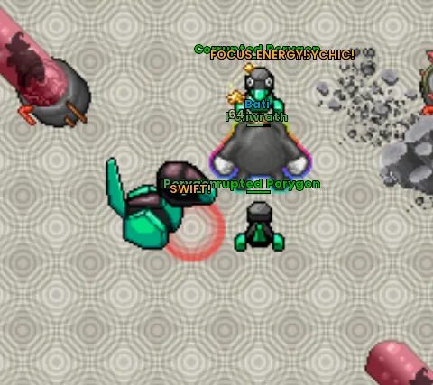
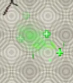
Al derrotarlo aparece el mensaje: “Has demostrado ser digno de navegar por el Mundo Digital. Esto es solo el comienzo...”
6. Regresa con Dr. Vektor
Después de vencer al boss, vuelve con Dr. Vektor para finalizar la misión y reclamar las recompensas.
Zona Wildscape 150+
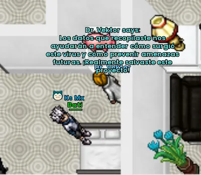